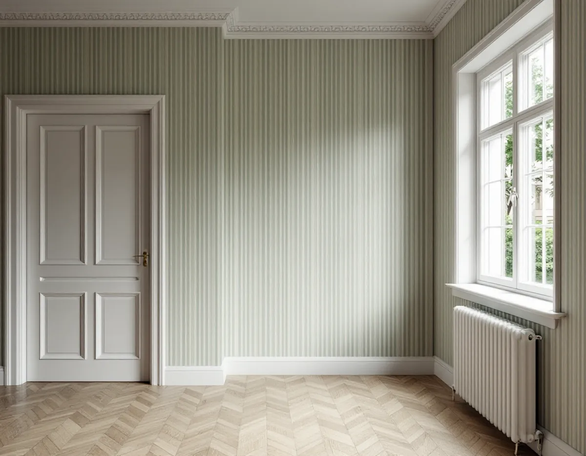
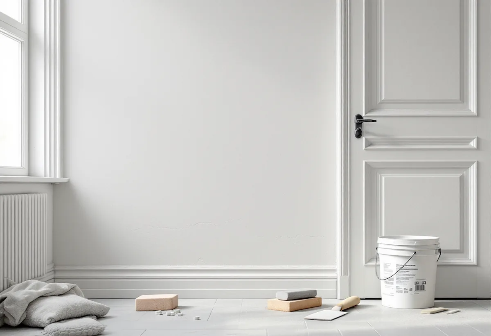

Platsbesök
Vi ser efter spåntapet, antalet lager och hur jämn väggen är under.

Sundbybergs centrala trähus ersattes under 1940-talet av lamellhus.
Beskriv jobbet kort.
Något blev fel. Kontrollera uppgifterna eller ring 08 12 410 276.
Vi tittar på jobbet på plats innan du får offert.
Du ser vad som ingår och vad det kostar.
Vi drar av ROT direkt och sköter ansökan.
Geal Entreprenad AB, Bromma. Org.nr 559303-7566.

I en lägenhet från den tiden möter dagens tapeter väggar som gjordes för andra krav. Geal Entreprenad AB tapetserar i lägenheter, radhus och villor i Sundbyberg och anpassar underlaget efter den tapet du väljer.
Stockholms stadsmuseum beskriver i Stockholms spår hur Sundbybergs historia tog fart på 1870-talet, när markägaren Anders Petter Löfström sålde mark både till bostäder och till den nya järnvägen mot Bergslagen. Fabriker och verkstäder växte upp bredvid bostadshusen, och redan 1887 var mer än hälften av den manliga befolkningen kroppsarbetare. Trävillor, hyreskaserner, fabriker och basarlängor blandades.
Under 1940-talet försvann den centrala trähusbebyggelsen, och de moderna lamellhus som i dag står vid till exempel Prästgatan, Fågelsången och Vegagatan uppfördes. Nästa stora rivningsvåg kom i slutet av 1960-talet, då stadsbilden söder om järnvägen förändrades.
En boende i en bostadsrätt från 1955 hade tagit bort spåntapet från 1970-talet och ytterligare fyra lager, och undrade varför tapethandlare nu krävde bredspackling eller en renoveringstapet. Byggnadsvårdsföreningens svar, skrivet av någon som arbetar i färghandel, är att tapeterna knappast var bättre förr men att kraven på finish har ökat. De flesta tapeter i dag sätts kant i kant utan överlapp, och då syns ojämnheter i skarvarna mer. Från mitten av 1900-talet var det dessutom vanligt med vinyltapeter, som är ganska tjocka.
Svaret konstaterar ändå att det går bra att tapetsera direkt på sandspackel om man inte snålar med limmet och gärna förlimmar. Att tapetsera direkt på en spåntapet ska man undvika. En tapet med mönster eller struktur döljer ojämnheter något bättre än en helt slät. Svaret påminner också om att klister finns i flera kvaliteter för olika slags tapeter, och att rätt sort behövs för att tapeten inte ska bubbla eller lossna.
För dig betyder det att valet av tapet och mängden underarbete hänger ihop. Vi visar vid besöket hur väggen ser ut i släpljus, så att du kan välja mellan en slät tapet med mer spackling och en mönstrad med mindre.
Föreningens artikel om underlag nämner att sandspackel började användas som underlag vid mitten av 1950-talet. För ny puts eller gipsputs anges två gånger bredspackling innan väggen limmas och tapeten sätts upp.
I en fråga om en funkislägenhet från 1948 med många originaldetaljer kvar förklarar föreningen hur elen brukade se ut. Det var vanligt att varje rum hade en strömställare vid dörren och ett vägguttag vid fönstret. Ledningarna låg i dolda plåtrör och donen var infällda, medan senare kompletteringar ofta drogs som synliga kuloledningar. Vita kablar kan målas in i väggfärgen och även tapetseras över.
Föreningen skriver att originaldonen är svåra att återskapa, men att en intresserad elektriker kan göra installationen både säker och anpassad till lägenhetens karaktär. Vi tapetserar runt de don som sitter kvar. Ska ett uttag flyttas eller en ledning dras om är det en elektriker som gör det, innan vi sätter upp tapeten.
Föreningens artikel Folkhemmets färger beskriver hur mycket som hände i byggnadsmåleriet ungefär mellan 1930 och 1960. Idealet flyttades från mönstrat, avbildande måleri till oftast enfärgade ytor, ibland med olika kulörer på väggarna i samma rum, och färgsättningen blev en del av rummets form. Den som vill få ett lyckat resultat i ett hus från perioden gör klokt i att ta reda på vad som var typiskt för just det huset.
Hittar vi rester av tidigare tapeter eller färgsättningar när lagren tas ner visar vi dem för dig innan de skrapas bort. Ska lägenheten eller huset även målas finns mer under målare i Sundbyberg.
Vi ser efter spåntapet, antalet lager och hur jämn väggen är under.
Slät tapet kräver mer spackling än en mönstrad – du väljer med det framför dig.
Nedtagning, spackling och uppsättning står var för sig.
Gamla lager tas ner, väggen spacklas och förlimmas.
Tapeten sätts upp kant i kant runt dörrar, fönster och don.
Vi går igenom skarvarna med dig och lämnar överbliven tapet.
I en bostadsrätt ger tapetsering rotavdrag när arbetet görs innanför lägenhetens tak, väggar och golv och gäller sådant du ansvarar för enligt föreningens stadgar. I en villa eller ett radhus som du äger gäller avdraget arbetet i bostaden.
Avdraget är högst 30 procent av arbetskostnaden och högst 50 000 kr per person och år, och rot och rut får sammanlagt bli högst 75 000 kr. Material och resor räknas inte. Geal drar av det direkt på fakturan.
Hur mycket som ska spacklas, om spåntapet eller flera lager ska ner och vilken tapet du väljer påverkar mest. Efter ett gratis platsbesök får du ett skriftligt kostnadsförslag.
Fasad, fönster och invändig målning.
Målare i Stockholm →Takbyte, takbesiktning och plåtarbeten.
Takläggare i Sundbyberg →Rött lertegel och synliga taktassar i Duvbo.
Takrenovering i Sundbyberg →Duvbo, potten och medgivandena.
Attefallshus i Sundbyberg →Ventilationen, OVK och Duvbo.
Badrumsrenovering i Sundbyberg →Nytt hus, träd och regler i Duvbo.
Byggföretag i Sundbyberg →Puts och kulör i stadskärnan.
Fasadmålning i Sundbyberg →Panel och puts på Duvbos villor.
Fasadrenovering i Sundbyberg →Duvbo, flerbostadshusen och lovet.
Fönsterbyte i Sundbyberg →Egnahemsvillornas fönster i Duvbo.
Fönsterrenovering i Sundbyberg →Trägolv i äldre villor och nya golv.
Golvläggare i Sundbyberg →Ta bort färg och fernissa från gamla golv.
Golvslipning i Sundbyberg →Duvbos villor och stadens lägenhetskök.
Köksrenovering i Sundbyberg →Lamellhus, kulörbyte och bostadsrätt.
Målare i Sundbyberg →Duvbos tak, rännor och lov.
Plåtslagare i Sundbyberg →Altan, pergola och staket enligt stadens guide.
Snickare i Sundbyberg →Container, ställning och grannar.
Takbyte i Sundbyberg →Duvbo, träden och riktlinjerna.
Tillbyggnad i Sundbyberg →Duvbos villor, kaminer och etablering.
Totalrenovering i Sundbyberg →Eller ring 08 12 410 276, mån–fre 08–17.
Beskriv jobbet kort.
Något blev fel. Kontrollera uppgifterna eller ring 08 12 410 276.